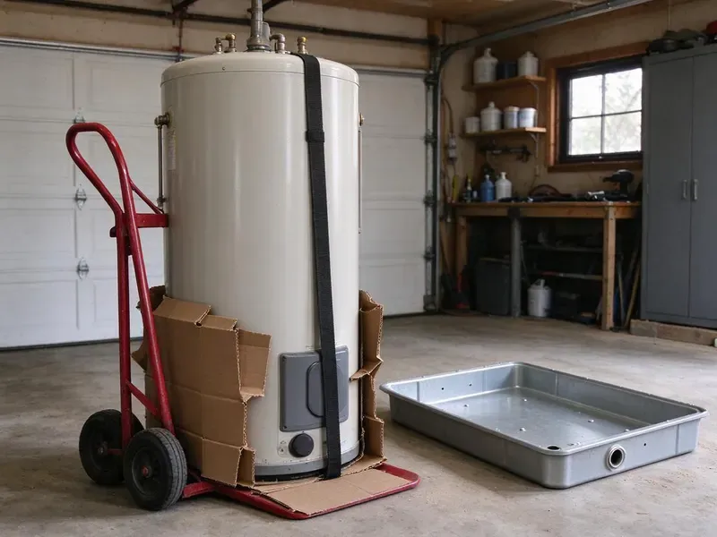

Sewage Ejector Pump Installation in Edina, MN
Pump running nonstop? CNV Plumbing diagnoses and replaces ejector pumps across Edina, MN.
- Gas-Tight Basins
- Water Tested
- Same-Day Pump Swaps
- Discharge Valves Installed
Ejector Pump Installation by CNV Plumbing in Edina, MN
A typical replacement takes a few hours, with the system tested before we leave.
Ejector, Grinder and Macerating Systems in Edina, MN
CNV Plumbing works on Minnesota homes with basements, hillside lots and walkout lower levels where gravity drainage is not possible. We size each ejector by fixture count, vertical lift and pipe length, so it moves waste without short cycling or straining. Every system gets an alarm. We also lay out the valves so a future pump swap takes an hour, not a day.
Work we handle every week:
- Grinder pump systems for pressure sewer and long runs
- Zoeller and Liberty ejector pump installs
- High water alarms, audible or Wi-Fi

Additional Plumbing Installation Services in Edina, MN
We install water heaters, pumps, lines, and fixtures across Edina, MN with careful, permitted work that passes inspection the first time.


Customers
Why Choose CNV Plumbing for Sewage Ejector Pump Installation in Edina, MN?
A poor ejector install leads to backups, odors and cleanup bills nobody wants. Every system we install is sealed and vented, with an alarm that sounds before waste reaches the floor, giving you time to stop flushing and call. An alarm costs little.
- Right Pump, Ejector, grinder or macerator, matched to the job.
- Clean Worksite, We cover floors and contain dust, and the slab gets patched.
- Code Compliance, Sealed lid, roof vent and check valve on each install.
Citywide Coverage
Wherever your property sits in Edina, on a hillside or a flat lot below the street, we can design an ejector system that works. We also service homes on septic, where the ejector discharge ties into the building drain upstream of the tank so the septic system handles the waste the same way it handles everything else. We protect the tank.
Experienced Team
Our team reads the pump curve, not a rule of thumb. Vertical lift, horizontal run, the number of fittings and the size of the discharge pipe all change how many gallons per minute a pump delivers, and a pump picked off the shelf without that math tends to short-cycle or struggle. We do the numbers.
Safety-First Approach
Before, during and after the work, we protect your home. Concrete cutting kicks up dust, so we hang plastic, wet the saw blade when possible, cover floors and furniture, and clean up every evening. Cleanup is daily.
Trusted Certified Edina Plumbing Services Professionals
At CNV Plumbing, we take pride in licensed, certified plumbing services throughout Edina, MN. Those papers on the wall mean something. Our plumbers hold recognized industry credentials, and they follow strict safety and quality rules on every repair, installation and maintenance call we run.
Call Us Now PHCC Plumbing Contractor Recognition
PHCC Plumbing Contractor Recognition Better Business Bureau (BBB) Accreditation
Better Business Bureau (BBB) Accreditation Angi Certified Pro
Angi Certified Pro ISO 9001 Quality Management Certification
ISO 9001 Quality Management CertificationSewage Ejector Pump Installation in Edina, MN
Liberty Pumps Sewage Ejector Pump Installation in Edina, MN
Liberty builds single and dual pump packages that arrive with the basin, pump, lid and fittings matched. Matched packages speed up the install, and Liberty's float design is less likely to snag on the basin wall, a common reason older pumps fail to start. Stuck floats are common.

Liberty Pumps Installation in Edina
Liberty ejector pumps show up on a lot of our installs, with cast iron bodies and two-inch solids handling on most sewage models. Liberty sells packaged systems with basin, lid, pump and check valve already matched, which means less field fitting and a listed assembly for inspection. We still add a shutoff.
Emergency Ejector Pump Replacement in Edina, MN
A dead ejector pump takes every below-grade fixture out of service until it is fixed. Stop using those fixtures, including the washer if it drains to the pit, then call (612) 712-9569 and we will try to get a plumber and a replacement pump to you that day. Replacements are often quick.
New Construction Sewage Ejector Pump Installation in Edina, MN
On a new build, the basin goes in before the slab is poured. That is the cheapest time, since there is no concrete to cut, and we stub the drains, the vent and the discharge to the plans so the rough-in inspection goes smoothly. Builders like the timing.
Duplex and Commercial Ejector Systems in Edina, MN
Commercial buildings, multi-unit properties and busy homes often need duplex systems with an alternating control panel. Alternating the lead pump spreads wear, and when one fails or flow spikes, the second starts on its own and the panel sounds an alarm. Two pumps, one alarm.
Laundry and Wet Bar Ejector Pumps in Edina, MN
Below-grade laundry rooms and wet bars send gray water down that still needs to be lifted to the sewer. A smaller laundry tray pump or a compact ejector can handle it, sized for the 15 or more gallons a washer dumps at once, with a lint filter so fibers do not wrap the impeller. Lint kills small pumps.
Ejector Pump Installation Cost Comparison in Edina, MN
Replacing a pump in an existing basin is the least expensive option, often done in a few hours. A full new system with basin, floor excavation, roof vent, electrical and alarm costs more, but it is usually the only way to add a below-sewer bath besides a macerator. Ask for both numbers.

Zoeller Ejector Pump Installation in Edina, MN
Zoeller has made ejector pumps for decades, and its cast iron models are the ones we see still running in older basements. They work well for new systems and for drop-in replacements, since many Zoeller models fit existing pits and discharge piping as is. Parts are easy to find.
Nearby Sewage Ejector Pump Installation in Edina, MN
Our plumbers know how permits usually go in Edina, MN, which keeps new ejector systems on schedule. New basins need a rough-in inspection with the vent and drains exposed, so we time the concrete patch around the inspector's visit rather than pouring early and cutting it back open. It saves a day.
Being close by lets us get to failures fast. A Saturday alarm, a float hung on the basin wall or a check valve banging every cycle can often be handled the same day, many in under an hour. We stock common pumps.
CNV Plumbing at a Glance
- Licensed and insured plumbers serving Edina, MN
- 24/7 emergency service with same-day scheduling
- Upfront, flat-rate pricing before work begins
- 4.8-star rated by 501+ Minnesota customers
Edina Map
Edina Information
- Population
- 53,348
- Area codes
- 952/763/612
- Service area
- Edina and communities within 40 miles
- Nearby
- St. Louis Park, Bloomington, Minnetonka, Eden Prairie
A good ejector install is gas-tight, vented through the roof and wired to an alarm, with a check valve and shutoff on the discharge so the pump can be swapped fast.
Expert Services
Reach out to CNV Plumbing for honest, reliable plumbing from people who know the trade in Edina, MN.
Our Specialized Plumbing Services in Edina, MN
At CNV Plumbing, we handle the full list of plumbing services across Edina, MN. We go from leak detection all the way to full system installations, for homes and commercial buildings, and we do it quickly at a fair price. Take a look at our core services below:


How an Ejector Job Runs in Edina, MN
What happens from the first call to the final water test on your ejector job.
Request a Quote
Call (612) 712-9569 or use the form to set up a visit. Expect a couple of quick questions.
Assessment
In your Edina home, we measure lift and run and check the vent route. The basin location gets picked.
Installation
The floor is opened if needed and the basin and pump go in. Every connection is sealed and tested.
Frequently Asked Questions About Sewage Ejector Pump Installation in Edina
Ejector installs in Edina usually run $2,500 to $5,000. A new basin, the amount of slab cutting, the vent run to the roof and the electrical work are what push a job toward one end or the other. We price it after a visit.
Seven to 15 years, depending on the pump and how it is used. Short cycling, wipes, grease and an undersized basin shorten life, while a sized system checked yearly can last near the top of the range. Maintenance pays off.
An ejector handles sewage and wastewater from fixtures below the sewer line, like toilets and sinks. Sump pumps move groundwater only.
Strange noises from the pit, frequent cycling, slow basement drains and odors. A pump that trips the alarm more than once in a few months is usually close to the end.
A sump pump moves groundwater, while an ejector moves waste from toilets and sinks. The ejector sits in a sealed, vented basin and passes solids, while a sump pit is open and only handles water, so the two cannot stand in for each other. They are different tools.
A pump that runs nonstop, a sounding alarm, sewage odor, gurgling drains and slow drainage. Act fast to avoid a backup.
We install Zoeller, Liberty and Wayne, plus Saniflo macerating units. We pick by your fixtures, lift and run.
New installations typically require a plumbing permit. Simple pump swaps may not, and we check the local rules.
What Our Customers Say About Our Plumbing Experts

Brian W.
I smelled gas behind the dryer and called right away. The plumber found a corroded flex connector, replaced it, and pressure tested the whole line before turning the gas back on. He let me watch the gauge hold steady for fifteen minutes.
Gas Line Repair · Minneapolis, MN
Angela D.
Our sump pump quit during a storm and the water was an inch from the basement carpet. CNV Plumbing put in a new pump with a battery backup that same evening. We have had two heavy rains since. It kicked on both times.
Sump Pump · Bloomington, MN
Carlos V.
Our house still had galvanized pipe, and upstairs the shower was a trickle. The crew repiped everything in PEX over three days and patched every drywall hole before they left. The pressure difference is night and day.
Repiping · Eden Prairie, MNMark T.
The floor drain in our office break room backed up every few weeks. The plumber ran a cable, then put a camera down and found roots at a joint about thirty feet out. Seeing it on the screen made the decision easy.
Drain Cleaning · Minneapolis, MNNathan E.
Our tankless heater kept throwing an error code and shutting off mid shower. The tech flushed the heat exchanger, which was full of scale, and replaced a bad flow sensor. Hot water has been steady for half a year now.
Water Heater Repair · Minnetonka, MNDiane F.
My kitchen faucet had dripped for months and I finally got tired of hearing it at night. CNV Plumbing came out the next morning, replaced the cartridge and the O rings, and tightened a loose base that was letting water under the sink.
Faucet Repair · Eden Prairie, MN